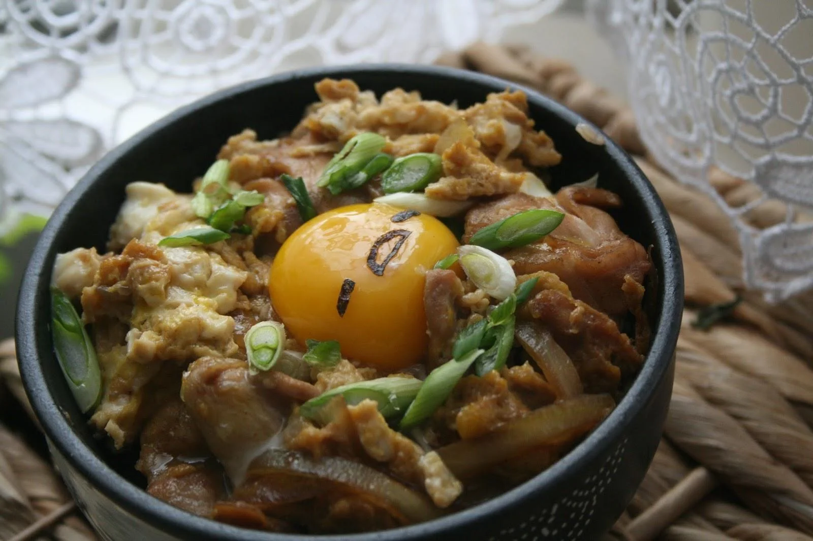

Oyako Don

Description
Oyako Don or 親子丼 a classic Japanese dish made from chicken and egg topped on rice! It’s easy to make, filling, and delicious. Top some warm fluffy Japanese rice with chicken and egg then sprinkle some garnishes and you’ve got yourself the perfect bowl of comfort food.
Ingredients
- Chicken Thighs
- Sake
- Mirin
- Dashi
- Onion
- Eggs
- Japanese Leek
Steps
- Cut ingredients into small and even bite size pieces
- Place a small frying pan over medium heat and pour 1/2 cup of seasoning
- Bring the seasoning to simmer, then add half of the cut onion, and 1/2 of the chicken thigh into the seasoning to cook.
- While the onion and chicken is being cooked, crack the three eggs open into a small mixing bowl and stir the egg
- Pour half of the eggs over the chicken and onion and evenly sprinkle chopped green leeks
- Place a lid on and turn the heat off to allow the remaining heat to cook the egg
- Slide over rice to serve
- Itadakimasu~! Enjoy your meal!